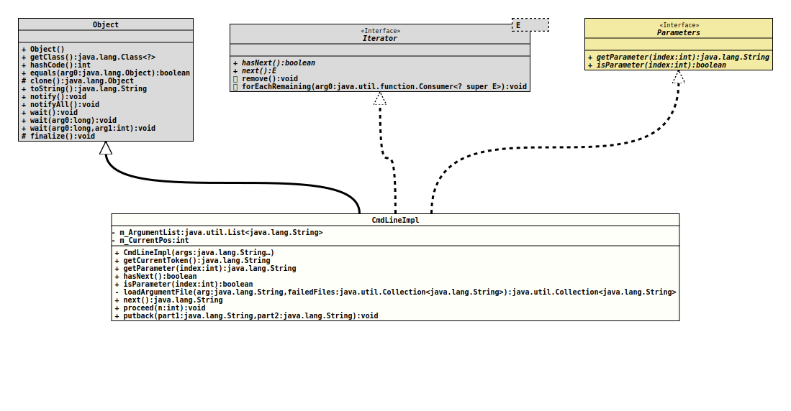

Class ArgumentParser.CmdLineImpl
- All Implemented Interfaces:
Iterator<String>,Parameters
- Enclosing class:
ArgumentParser
This class is essentially a pointer over the
String
array with the command line arguments. It can move forward, and it can
look ahead.
But it will also resolve the references to argument files, and it will translate single letter options without blanks between option and value into two entries, as well as long entries where an equal sign is used.
- Author:
- Thomas Thrien (thomas.thrien@tquadrat.org)
- Version:
- $Id: ArgumentParser.java 1120 2024-03-16 09:48:00Z tquadrat $
- Since:
- 0.0.1
- UML Diagram
-

UML Diagram for "org.tquadrat.foundation.config.internal.ArgumentParser.CmdLineImpl"
{kind=link}
-
Field Summary
FieldsModifier and TypeFieldDescriptionThe arguments list.private intThe current position in the arguments list. -
Constructor Summary
Constructors -
Method Summary
Modifier and TypeMethodDescriptionfinal StringReturns the current token from the arguments list.final StringgetParameter(int index) Returns the additional parameter to a related option.final booleanhasNext()Checks if there are more entries.final booleanisParameter(int index) Tests whether the given index is for an additional parameter to a related option.private final Collection<String> loadArgumentFile(String arg, Collection<String> failedFiles) Loads an argument file as specified by the given argument and returns the contents of that file as additional command line arguments.final Stringnext()final voidproceed(int n) Skip the given number of entries.final voidIn case the entry is a combination from option and the related parameter (like--arg valueor, for single character options,-p value), this method is used to put it back to the command line.Methods inherited from class java.lang.Object
clone, equals, finalize, getClass, hashCode, notify, notifyAll, toString, wait, wait, waitMethods inherited from interface java.util.Iterator
forEachRemaining, remove
-
Field Details
-
m_ArgumentList
The arguments list. -
m_CurrentPos
The current position in the arguments list.
-
-
Constructor Details
-
CmdLineImpl
Creates a new object for CmdLineImpl.- Parameters:
args- The arguments list.
-
-
Method Details
-
getCurrentToken
Returns the current token from the arguments list.- Returns:
- The current token.
-
getParameter
Returns the additional parameter to a related option.
Specifying 0 for
indexwill retrieve the token next to the option. For example, if the command line looks like-o abc -d xthen
getParameter(0)for the option "-o" returns "abc";getParameter(1)would return "-d", but as this is an option, aCmdLineExceptionwill be thrown instead.- Specified by:
getParameterin interfaceParameters- Parameters:
index- The index for the requested parameter; must be 0 or greater.- Returns:
- The requested parameter.
- Throws:
CmdLineException- An attempt is made to access a non-existent index, or the index is for a non-parameter entry on the command line.
-
hasNext
Checks if there are more entries. -
isParameter
Tests whether the given index is for an additional parameter to a related option. The first additional parameter has the index 0, a second one will have 1 and so on.
Assume the command line looks like this:
-o abc def -d xThen
isParameter(0)andisParameter(1)would returntrue, butisParameter(3)returnsfalse:xis an additional parameter, but for the option-din this case.- Specified by:
isParameterin interfaceParameters- Parameters:
index- The index for the requested parameter; must be 0 or greater.- Returns:
trueif the argument at the given location is an additional parameter for the current option,falseif not.- Throws:
CmdLineException
-
loadArgumentFile
Loads an argument file as specified by the given argument and returns the contents of that file as additional command line arguments.
If no file could be retrieved for the name given with the argument, that argument will be added to the list of failed files and the unchanged argument will be returned.
Variables of the form
${<name>}will be replaced by the value for name from the system properties (System.getProperty(String)).Lines that starts with "#" are comments; if an argument has to start with "#", it has to be escaped with "\#".
- Parameters:
arg- The command line argument.failedFiles- The list of failed files.- Returns:
- The additional command line arguments as read from the file, if it could be opened.
-
next
- Specified by:
nextin interfaceIterator<String>- Throws:
NoSuchElementException
-
proceed
Skip the given number of entries.- Parameters:
n- The number of entries to skip; must be greater 0.
-
putback
In case the entry is a combination from option and the related parameter (like--arg valueor, for single character options,-p value), this method is used to put it back to the command line.- Parameters:
part1- The first part, usually the option.part2- The second part, usually the value.
-